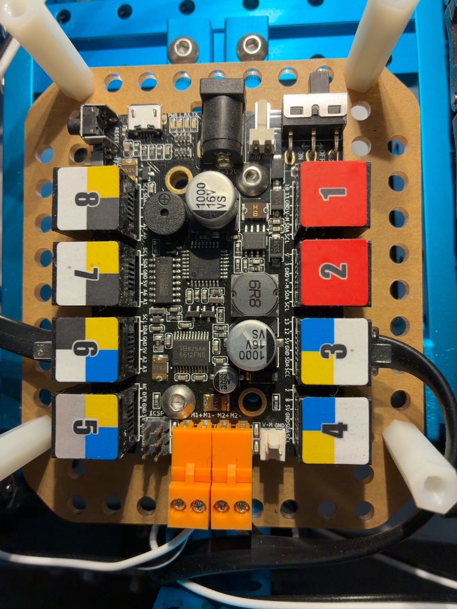
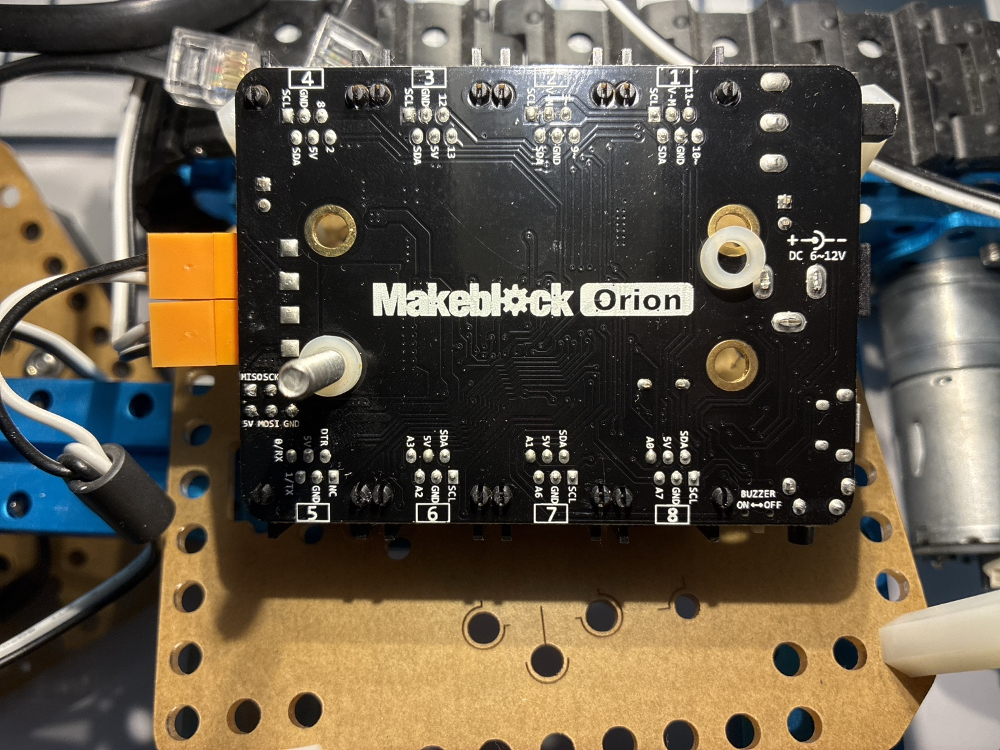
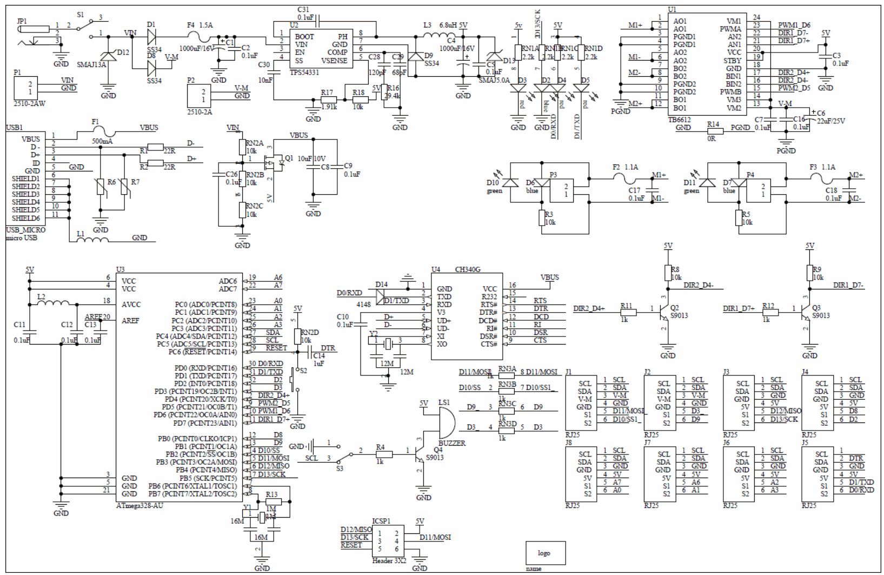

Vorhandenes Board
Me Orion mit Micro-USB, Motorausgängen M1 und M2 sowie acht RJ25-Ports.
Der Makeblock Starter wird mit dem Steuerboard Me Orion über die Arduino IDE in C++ programmiert. Das vorhandene Board verwendet einen ATmega328P, ist Arduino-Uno-kompatibel und wird über Micro-USB angeschlossen. Upload, serielle Kommunikation, Fahrbefehle und Softwareidentifikation wurden am Schulgerät praktisch geprüft.

Me Orion mit Micro-USB, Motorausgängen M1 und M2 sowie acht RJ25-Ports.

Beschriftungen, Summer-Schalter und Anschlüsse des konkret getesteten Boards.

Grundlage für die Zuordnung der RJ25-Ports zu den Pins des ATmega328P.
/dev/cu.wchusbserial1130
Verwendet wird MakeBlockDrive 3.27 mit #include <MeOrion.h>.
Die im Arduino-Katalog angebotene Version 3.24.0 ließ sich mit der aktuellen AVR-Toolchain wegen eines
Fehlers in MeSuperVariable.cpp nicht kompilieren. Getestet wurde deshalb der offizielle
Stand 3.27 aus dem Hersteller-Repository.
Minimaler Upload- und Serial-Test mit Textausgabe und Status-LED.
Fahrbefehle, Servo, Sicherheitsstopp, Status-LED und maschinenlesbare Identifikation.
Befehlsübersicht, Portbelegung, Servoanschluss und Versionshistorie.
Jeder Befehl wird mit einem Zeilenende übertragen. Motorwerte sind auf den Bereich von -255 bis 255 begrenzt.
| Befehl | Funktion |
|---|---|
i | Softwareversion, Build, Board, Bibliothek, Sensoren und erwartete Portbelegung ausgeben |
h oder 0 | beide Motoren stoppen |
f 150 | beide Motoren mit demselben Wert ansteuern |
f 150 100 | linken und rechten Motor getrennt ansteuern |
l 120 | nur den linken Motor ansteuern |
r 120 | nur den rechten Motor ansteuern |
s 90 | Servo auf einen Winkel von 0 bis 180 Grad stellen |
Ein Fahrbefehl gilt höchstens eine Sekunde. Ohne rechtzeitige Wiederholung stoppt das Programm beide Motoren
und meldet SAFE,timeout. Motorversuche nur mit frei drehenden Rädern durchführen.
| Funktion | Anschluss | Hinweis |
|---|---|---|
| linker Motor | M1 | Gleichstrommotor des Starter-Fahrzeugs |
| rechter Motor | M2 | Drehrichtung wird im Programm angeglichen |
| Servo | PORT_3, SLOT1, D12 | über Me RJ25 Adapter; erst beim ersten gültigen Servobefehl aktiv |
| Status-LED | D13 | 5 Hz vor dem Handshake, 0,5 Hz nach dem Befehl i |
| USB-UART | D0/RX und D1/TX | Upload und Kommunikation mit dem PC |
Der Befehl i liefert diese Belegung als ID,ports=.... Alle Sensoren sind im
aktuellen Fahr- und Servotest deaktiviert. Die Software enthält vorbereitete, einzeln aktivierbare Unterstützung
für Me Ultrasonic Sensor, Me Line Follower, Me Light Sensor, Me Sound Sensor, Me PIR Motion Sensor,
Me Temperature Sensor, Me Gyro und Me Compass.
Schnelles Blinken mit 5 Hz bedeutet, dass seit dem Reset noch kein gültiger Handshake empfangen wurde.
Nach dem Befehl i blinkt die LED dauerhaft langsam mit 0,5 Hz. Der ATmega328P kann das spätere Schließen eines seriellen Terminals nicht selbst erkennen.
Der Servo wird über einen Me RJ25 Adapter an PORT_3, SLOT1 angeschlossen. SLOT2 bleibt frei, weil es D13 und damit die Status-LED verwendet.
Vor dem ersten Befehl Signal, 5 V und GND prüfen. Servos mit höherem Strombedarf benötigen eine eigene stabile 5-V-Versorgung mit gemeinsamer Masse.